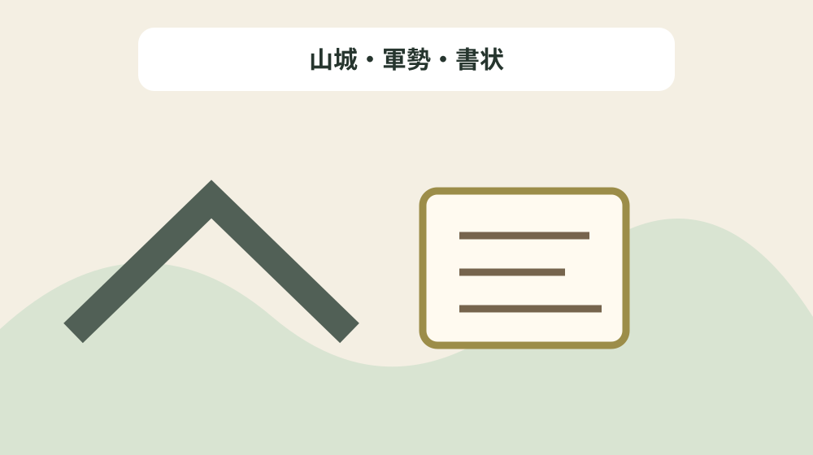
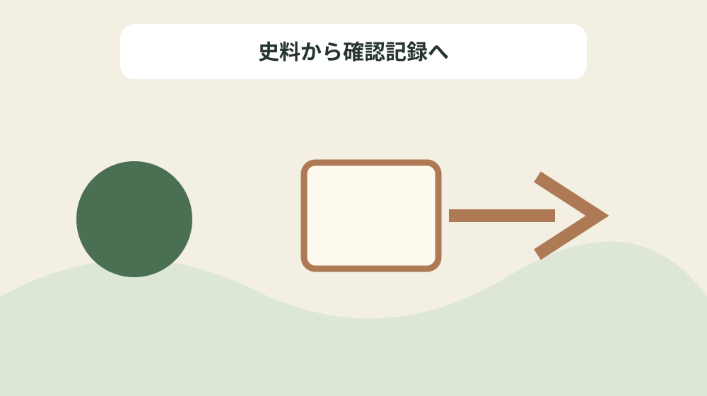

国人領主天方道芬を城・合戦・文書の時系列で読む
結論：人物表記、城、合戦、主従関係、記録時点を分けることで、資料の記載と現在の状態を混同しない天方道芬史料年表になります。
天方道芬史料年表で解く問い
森町公式資料には「今川氏親による遠江征圧は1517年(永正14年)に成就し、約20年余にわたる争乱(そうらん)は終了し、遠江は今川氏の領国となる。」と記されています。国人領主天方道芬を城・合戦・文書の時系列で読むでは、この記載を天方道芬史料年表の一行にし、人物表記、城、合戦、主従関係、記録時点を分けるための根拠として扱います。資料名と確認日を先に書き、後から説明だけが独り歩きしないようにします。
同じページで確認できる「道芬のように上洛して学習するような武士は沢山いたとは思えないが、15世紀後半の遠江の状況を記した『 円通松堂 ( えんつうしょうどう ) 禅師語録』に 拠 ( よ ) ると、和歌・漢詩を 嗜 ( たしな ) む国人・土豪は沢山いる。」は、前の事実と似ていても別の対象です。山城・軍勢・書状を読み解くときは、資料の掲載順ではなく、名称・年代・場所・根拠の対応を見ます。写真、家族の記憶、公的資料を三列に分け、食い違いを未確認として残します。
天方道芬史料年表では「町域の 国人 ( こくじん ) 、 土豪 ( どごう ) も今川氏の家臣団に結成された。」の確認欄と「戸綿郷の領主山内三郎通種(飯田系山内氏)・通信・相順兄弟等である。」の照会欄を分けます。公式本文が述べていない現況や公開可否は未確認と書き、家族の記憶には話者と聞取日を添えます。旧記録を消さず、回答日と確認先を付けた新しい行を追加します。
公式本文から確定できる十二事実
森町公式資料には「1524年(大永4年)、同6年上洛、実隆邸を7回訪ね、そこで著名な連歌師(れんがし)と席を同じくした事もあった。」と記されています。国人領主天方道芬を城・合戦・文書の時系列で読むでは、この記載を天方道芬史料年表の一行にし、人物表記、城、合戦、主従関係、記録時点を分けるための根拠として扱います。主語と対象を原文へ戻し、似た地名や人物を同じものとして扱いません。
同じページで確認できる「(6)伝天方氏三代の墓。中央が天方道芬の卵塔(らんとう)と伝えられる。 現在の墓所に移る前は、蔵雲院の出先にある川端に石塔が並んでいたと言われている。 (森町大鳥居 蔵雲院)」は、前の事実と似ていても別の対象です。山城・軍勢・書状を読み解くときは、資料の掲載順ではなく、名称・年代・場所・根拠の対応を見ます。資料の利点は典拠へ戻れることにあり、現在の状態を保証するものではありません。
天方道芬史料年表では「道芬のように上洛して学習するような武士は沢山いたとは思えないが、15世紀後半の遠江の状況を記した『 円通松堂 ( えんつうしょうどう ) 禅師語録』に 拠 ( よ ) ると、和歌・漢詩を 嗜 ( たしな ) む国人・土豪は沢山いる。」の確認欄と「(8)棟札。大檀那(だんな)は三倉俊宋、町内に残る最も古い棟札である。 右表、左裏。 (三倉大久保 八幡神社所蔵)」の照会欄を分けます。公式本文が述べていない現況や公開可否は未確認と書き、家族の記憶には話者と聞取日を添えます。不動産の道路、境界、登記、建物安全性は、この歴史資料とは別に調べます。
天方道芬史料年表の列を決める
森町公式資料には「戸綿郷の領主山内三郎通種(飯田系山内氏)・通信・相順兄弟等である。」と記されています。国人領主天方道芬を城・合戦・文書の時系列で読むでは、この記載を天方道芬史料年表の一行にし、人物表記、城、合戦、主従関係、記録時点を分けるための根拠として扱います。年号の横へ出来事を示す動詞を残し、制作年と伝来年を一つにしません。
同じページで確認できる「1524年(大永4年)、同6年上洛、実隆邸を7回訪ね、そこで著名な連歌師(れんがし)と席を同じくした事もあった。」は、前の事実と似ていても別の対象です。山城・軍勢・書状を読み解くときは、資料の掲載順ではなく、名称・年代・場所・根拠の対応を見ます。不足する情報を空欄の理由として残し、推測で表を完成させません。
天方道芬史料年表では「(3)今川氏親禁制。今川軍の軍事行動が知られる。 (森町橘 大洞院所蔵)」の確認欄と「また、彼は、仁和寺の、尊海(そんかい)と言う高僧とも親交があったようである。」の照会欄を分けます。公式本文が述べていない現況や公開可否は未確認と書き、家族の記憶には話者と聞取日を添えます。まだ売ると決めていない段階でも、資料の所在と根拠を家族で共有できます。

年代の種類を動詞で分ける
森町公式資料には「(4)今川家朱印状。武藤刑部少輔や天宮神主中村助太郎の名前が見える。 (森町一宮 小國神社所蔵)」と記されています。国人領主天方道芬を城・合戦・文書の時系列で読むでは、この記載を天方道芬史料年表の一行にし、人物表記、城、合戦、主従関係、記録時点を分けるための根拠として扱います。所在地が示されても見学可能とは限らないため、公開条件を別に確認します。
同じページで確認できる「(3)今川氏親禁制。今川軍の軍事行動が知られる。 (森町橘 大洞院所蔵)」は、前の事実と似ていても別の対象です。山城・軍勢・書状を読み解くときは、資料の掲載順ではなく、名称・年代・場所・根拠の対応を見ます。問い合わせは対象名、参照ページ、確認済みの事実、知りたい一点に絞ります。
天方道芬史料年表では「(8)棟札。大檀那(だんな)は三倉俊宋、町内に残る最も古い棟札である。 右表、左裏。 (三倉大久保 八幡神社所蔵)」の確認欄と「(4)今川家朱印状。武藤刑部少輔や天宮神主中村助太郎の名前が見える。 (森町一宮 小國神社所蔵)」の照会欄を分けます。公式本文が述べていない現況や公開可否は未確認と書き、家族の記憶には話者と聞取日を添えます。最初の一行から始め、十二事実を同時に確定しようとしないことが継続の要点です。
場所・所蔵・公開条件を混同しない
森町公式資料には「今川氏親による遠江征圧は1517年(永正14年)に成就し、約20年余にわたる争乱(そうらん)は終了し、遠江は今川氏の領国となる。」と記されています。国人領主天方道芬を城・合戦・文書の時系列で読むでは、この記載を天方道芬史料年表の一行にし、人物表記、城、合戦、主従関係、記録時点を分けるための根拠として扱います。写真、家族の記憶、公的資料を三列に分け、食い違いを未確認として残します。
同じページで確認できる「今川氏は氏親(うじちか)−氏輝(うじてる)−義元(よしもと)−氏眞(うじざね)と続き、その間、「今川仮名目録」と言う分国法を制定するなど、領国支配を整え、最盛期には駿河・遠江・三河の3ヵ国を支配する東海地方の有力な戦国大名であった。」は、前の事実と似ていても別の対象です。山城・軍勢・書状を読み解くときは、資料の掲載順ではなく、名称・年代・場所・根拠の対応を見ます。旧記録を消さず、回答日と確認先を付けた新しい行を追加します。
天方道芬史料年表では「町域の 国人 ( こくじん ) 、 土豪 ( どごう ) も今川氏の家臣団に結成された。」の確認欄と「町域の 国人 ( こくじん ) 、 土豪 ( どごう ) も今川氏の家臣団に結成された。」の照会欄を分けます。公式本文が述べていない現況や公開可否は未確認と書き、家族の記憶には話者と聞取日を添えます。資料名と確認日を先に書き、後から説明だけが独り歩きしないようにします。
良い点
森町公式資料には「1524年(大永4年)、同6年上洛、実隆邸を7回訪ね、そこで著名な連歌師(れんがし)と席を同じくした事もあった。」と記されています。国人領主天方道芬を城・合戦・文書の時系列で読むでは、この記載を天方道芬史料年表の一行にし、人物表記、城、合戦、主従関係、記録時点を分けるための根拠として扱います。資料の利点は典拠へ戻れることにあり、現在の状態を保証するものではありません。
同じページで確認できる「戸綿郷の領主山内三郎通種(飯田系山内氏)・通信・相順兄弟等である。」は、前の事実と似ていても別の対象です。山城・軍勢・書状を読み解くときは、資料の掲載順ではなく、名称・年代・場所・根拠の対応を見ます。不動産の道路、境界、登記、建物安全性は、この歴史資料とは別に調べます。
天方道芬史料年表では「道芬のように上洛して学習するような武士は沢山いたとは思えないが、15世紀後半の遠江の状況を記した『 円通松堂 ( えんつうしょうどう ) 禅師語録』に 拠 ( よ ) ると、和歌・漢詩を 嗜 ( たしな ) む国人・土豪は沢山いる。」の確認欄と「(1)今川氏親木像。今川氏の基礎をつくった戦国大名。 (静岡市 増善寺所蔵)」の照会欄を分けます。公式本文が述べていない現況や公開可否は未確認と書き、家族の記憶には話者と聞取日を添えます。主語と対象を原文へ戻し、似た地名や人物を同じものとして扱いません。
注文したい点
森町公式資料には「戸綿郷の領主山内三郎通種(飯田系山内氏)・通信・相順兄弟等である。」と記されています。国人領主天方道芬を城・合戦・文書の時系列で読むでは、この記載を天方道芬史料年表の一行にし、人物表記、城、合戦、主従関係、記録時点を分けるための根拠として扱います。不足する情報を空欄の理由として残し、推測で表を完成させません。
同じページで確認できる「(8)棟札。大檀那(だんな)は三倉俊宋、町内に残る最も古い棟札である。 右表、左裏。 (三倉大久保 八幡神社所蔵)」は、前の事実と似ていても別の対象です。山城・軍勢・書状を読み解くときは、資料の掲載順ではなく、名称・年代・場所・根拠の対応を見ます。まだ売ると決めていない段階でも、資料の所在と根拠を家族で共有できます。
天方道芬史料年表では「(3)今川氏親禁制。今川軍の軍事行動が知られる。 (森町橘 大洞院所蔵)」の確認欄と「今川氏親による遠江征圧は1517年(永正14年)に成就し、約20年余にわたる争乱(そうらん)は終了し、遠江は今川氏の領国となる。」の照会欄を分けます。公式本文が述べていない現況や公開可否は未確認と書き、家族の記憶には話者と聞取日を添えます。年号の横へ出来事を示す動詞を残し、制作年と伝来年を一つにしません。
対案・結論
森町公式資料には「(4)今川家朱印状。武藤刑部少輔や天宮神主中村助太郎の名前が見える。 (森町一宮 小國神社所蔵)」と記されています。国人領主天方道芬を城・合戦・文書の時系列で読むでは、この記載を天方道芬史料年表の一行にし、人物表記、城、合戦、主従関係、記録時点を分けるための根拠として扱います。問い合わせは対象名、参照ページ、確認済みの事実、知りたい一点に絞ります。
同じページで確認できる「また、彼は、仁和寺の、尊海(そんかい)と言う高僧とも親交があったようである。」は、前の事実と似ていても別の対象です。山城・軍勢・書状を読み解くときは、資料の掲載順ではなく、名称・年代・場所・根拠の対応を見ます。最初の一行から始め、十二事実を同時に確定しようとしないことが継続の要点です。
天方道芬史料年表では「(8)棟札。大檀那(だんな)は三倉俊宋、町内に残る最も古い棟札である。 右表、左裏。 (三倉大久保 八幡神社所蔵)」の確認欄と「道芬のように上洛して学習するような武士は沢山いたとは思えないが、15世紀後半の遠江の状況を記した『 円通松堂 ( えんつうしょうどう ) 禅師語録』に 拠 ( よ ) ると、和歌・漢詩を 嗜 ( たしな ) む国人・土豪は沢山いる。」の照会欄を分けます。公式本文が述べていない現況や公開可否は未確認と書き、家族の記憶には話者と聞取日を添えます。所在地が示されても見学可能とは限らないため、公開条件を別に確認します。

家族に残す確認記録
森町公式資料には「今川氏親による遠江征圧は1517年(永正14年)に成就し、約20年余にわたる争乱(そうらん)は終了し、遠江は今川氏の領国となる。」と記されています。国人領主天方道芬を城・合戦・文書の時系列で読むでは、この記載を天方道芬史料年表の一行にし、人物表記、城、合戦、主従関係、記録時点を分けるための根拠として扱います。旧記録を消さず、回答日と確認先を付けた新しい行を追加します。
同じページで確認できる「(4)今川家朱印状。武藤刑部少輔や天宮神主中村助太郎の名前が見える。 (森町一宮 小國神社所蔵)」は、前の事実と似ていても別の対象です。山城・軍勢・書状を読み解くときは、資料の掲載順ではなく、名称・年代・場所・根拠の対応を見ます。資料名と確認日を先に書き、後から説明だけが独り歩きしないようにします。
天方道芬史料年表では「町域の 国人 ( こくじん ) 、 土豪 ( どごう ) も今川氏の家臣団に結成された。」の確認欄と「(6)伝天方氏三代の墓。中央が天方道芬の卵塔(らんとう)と伝えられる。 現在の墓所に移る前は、蔵雲院の出先にある川端に石塔が並んでいたと言われている。 (森町大鳥居 蔵雲院)」の照会欄を分けます。公式本文が述べていない現況や公開可否は未確認と書き、家族の記憶には話者と聞取日を添えます。写真、家族の記憶、公的資料を三列に分け、食い違いを未確認として残します。
現地確認と権利資料を分ける
森町公式資料には「1524年(大永4年)、同6年上洛、実隆邸を7回訪ね、そこで著名な連歌師(れんがし)と席を同じくした事もあった。」と記されています。国人領主天方道芬を城・合戦・文書の時系列で読むでは、この記載を天方道芬史料年表の一行にし、人物表記、城、合戦、主従関係、記録時点を分けるための根拠として扱います。不動産の道路、境界、登記、建物安全性は、この歴史資料とは別に調べます。
同じページで確認できる「町域の 国人 ( こくじん ) 、 土豪 ( どごう ) も今川氏の家臣団に結成された。」は、前の事実と似ていても別の対象です。山城・軍勢・書状を読み解くときは、資料の掲載順ではなく、名称・年代・場所・根拠の対応を見ます。主語と対象を原文へ戻し、似た地名や人物を同じものとして扱いません。
天方道芬史料年表では「道芬のように上洛して学習するような武士は沢山いたとは思えないが、15世紀後半の遠江の状況を記した『 円通松堂 ( えんつうしょうどう ) 禅師語録』に 拠 ( よ ) ると、和歌・漢詩を 嗜 ( たしな ) む国人・土豪は沢山いる。」の確認欄と「1524年(大永4年)、同6年上洛、実隆邸を7回訪ね、そこで著名な連歌師(れんがし)と席を同じくした事もあった。」の照会欄を分けます。公式本文が述べていない現況や公開可否は未確認と書き、家族の記憶には話者と聞取日を添えます。資料の利点は典拠へ戻れることにあり、現在の状態を保証するものではありません。
大石の視点
森町公式資料には「戸綿郷の領主山内三郎通種(飯田系山内氏)・通信・相順兄弟等である。」と記されています。国人領主天方道芬を城・合戦・文書の時系列で読むでは、この記載を天方道芬史料年表の一行にし、人物表記、城、合戦、主従関係、記録時点を分けるための根拠として扱います。まだ売ると決めていない段階でも、資料の所在と根拠を家族で共有できます。
同じページで確認できる「(1)今川氏親木像。今川氏の基礎をつくった戦国大名。 (静岡市 増善寺所蔵)」は、前の事実と似ていても別の対象です。山城・軍勢・書状を読み解くときは、資料の掲載順ではなく、名称・年代・場所・根拠の対応を見ます。年号の横へ出来事を示す動詞を残し、制作年と伝来年を一つにしません。
天方道芬史料年表では「(3)今川氏親禁制。今川軍の軍事行動が知られる。 (森町橘 大洞院所蔵)」の確認欄と「(3)今川氏親禁制。今川軍の軍事行動が知られる。 (森町橘 大洞院所蔵)」の照会欄を分けます。公式本文が述べていない現況や公開可否は未確認と書き、家族の記憶には話者と聞取日を添えます。不足する情報を空欄の理由として残し、推測で表を完成させません。
まとめ
森町公式資料には「(4)今川家朱印状。武藤刑部少輔や天宮神主中村助太郎の名前が見える。 (森町一宮 小國神社所蔵)」と記されています。国人領主天方道芬を城・合戦・文書の時系列で読むでは、この記載を天方道芬史料年表の一行にし、人物表記、城、合戦、主従関係、記録時点を分けるための根拠として扱います。最初の一行から始め、十二事実を同時に確定しようとしないことが継続の要点です。
同じページで確認できる「今川氏親による遠江征圧は1517年(永正14年)に成就し、約20年余にわたる争乱(そうらん)は終了し、遠江は今川氏の領国となる。」は、前の事実と似ていても別の対象です。山城・軍勢・書状を読み解くときは、資料の掲載順ではなく、名称・年代・場所・根拠の対応を見ます。所在地が示されても見学可能とは限らないため、公開条件を別に確認します。
天方道芬史料年表では「(8)棟札。大檀那(だんな)は三倉俊宋、町内に残る最も古い棟札である。 右表、左裏。 (三倉大久保 八幡神社所蔵)」の確認欄と「今川氏は氏親(うじちか)−氏輝(うじてる)−義元(よしもと)−氏眞(うじざね)と続き、その間、「今川仮名目録」と言う分国法を制定するなど、領国支配を整え、最盛期には駿河・遠江・三河の3ヵ国を支配する東海地方の有力な戦国大名であった。」の照会欄を分けます。公式本文が述べていない現況や公開可否は未確認と書き、家族の記憶には話者と聞取日を添えます。問い合わせは対象名、参照ページ、確認済みの事実、知りたい一点に絞ります。
よくある質問
天方道芬史料年表で最初に書く項目は何ですか。
資料名、対象名、確認日、根拠の種類です。人物表記、城、合戦、主従関係、記録時点を分けるため、現況と家族の記憶は別欄にします。
天方道芬史料年表に所在地があれば現地を見学できますか。
掲載だけでは判断できません。今川氏親による遠江征圧は1517年(永正14年)に成就し、約20年余にわたる争乱(そうらん)は終了し、遠江は今川氏の領国となる。という記録は山城・軍勢・書状を読む根拠ですが、現在の公開日時や立入り条件の根拠ではありません。対象ごとに管理者の案内を確認します。
天方道芬史料年表で年代が複数ある場合はどれを採用しますか。
町域の 国人 ( こくじん ) 、 土豪 ( どごう ) も今川氏の家臣団に結成された。という記録を起点に、山城・軍勢・書状の制作、記録、移転、発見などの動作を分けます。異なる出来事の年は統合せず、それぞれの典拠を同じ行に残します。
家族の記憶は天方道芬史料年表の公式事実と一緒に書けますか。
1524年(大永4年)、同6年上洛、実隆邸を7回訪ね、そこで著名な連歌師(れんがし)と席を同じくした事もあった。という公的記載とは別欄にします。山城・軍勢・書状について話した人、聞取日、確信度を書けば、家族の記憶を残しつつ公的資料へ上書きせず比較できます。
公式情報源
最終確認日：2026-08-18 ／ 公表事実と執筆者の解釈・意見を分けて記載しています。